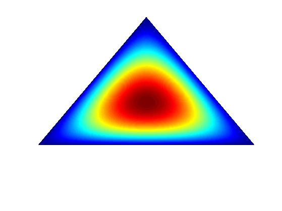

Dirichlet Distribution Visualization
% This file is from pmtk3.googlecode.com function visDirichletGui(arg1) % % % to run, just type visDirichletGui. % %PMTKauthor Jonathan Huang %PMTKurl http://www.cs.cmu.edu/~jch1/research/dirichlet/visDirichletGui.m global MYFIG SIMPLEXHANDLE alpha0 alpha1 alpha2 res map tris D pts; if nargin == 0 alpha=[ 2 2 2]; % compute a fine triangulation of 2-simplex disp('Triangulating...'); res=200; map=zeros(res^2/2,1); tris = zeros(res^2/2,3); tris2d = zeros(res^2/2,2); indices = zeros(res^2,3); pts = zeros(res^2,3); p=[0 0 1]; u = 0; v = 1; counter=0; for i=1:res for j=1:res-i counter=counter+1; u = i/res; v = j/res; p = [u v 1-u-v]; pts(counter,:)=p; tris2d(counter,:)=[u v]; tris(counter,:)=p; map(counter) = prod(p.^(alpha-1)); end end tris=tris(1:counter,:); tris2d=tris2d(1:counter,:); pts=pts(1:counter,:); D=delaunay(tris2d(:,1),tris2d(:,2)); map=255*(map(1:counter)/max(map)); MYFIG=figure; hold on; campos([2 2 2]); camtarget([0 0 0]); axis off minA = 0.1; maxA = 50; % modified by KPM %title('2d Dirichlet Distribution Visualization Tool'); set(MYFIG, 'Visible', 'on', 'NumberTitle', 'off', 'Name', 'visDirichletGui - Jonathan Huang'); set(MYFIG, 'DoubleBuffer', 'on'); SIMPLEXHANDLE =trisurf(D,tris(:,1),tris(:,2),tris(:,3),'LineStyle','none', ... 'Cdata',map,'FaceColor','interp'); %{ alpha0=uicontrol('Style', 'text', 'String', 'alpha0', 'Unit', 'normalized', ... 'Position', [0.54 .05*(3) 0.06 0.04], 'Tag', 'contrastlabel'); alpha0=uicontrol('Style', 'slider', 'String', 'alpha0', 'Unit', 'normalized', ... 'Position', [0.6 .05*(3) 0.2 0.04], 'Tag', 'contrast','sliderstep',[.02 .1],'Min',minA,'Max',maxA,'Value',alpha(1),... 'Callback', 'visDirichletGui(''repaint'')'); alpha1=uicontrol('Style', 'text', 'String', 'alpha1', 'Unit', 'normalized', ... 'Position', [0.54 .05*(2) 0.06 0.04], 'Tag', 'contrastlabel'); alpha1=uicontrol('Style', 'slider', 'String', 'alpha1', 'Unit', 'normalized', ... 'Position', [0.6 .05*(2) 0.2 0.04], 'Tag', 'contrast','sliderstep',[.02 .1],'Min',minA,'Max',maxA,'Value',alpha(2),... 'Callback', 'visDirichletGui(''repaint'')'); alpha2=uicontrol('Style', 'text', 'String', 'alpha2', 'Unit', 'normalized', ... 'Position', [0.54 .05*(1) 0.06 0.04], 'Tag', 'contrastlabel'); alpha2=uicontrol('Style', 'slider', 'String', 'alpha2', 'Unit', 'normalized', ... 'Position', [0.6 .05*(1) 0.2 0.04], 'Tag', 'contrast','sliderstep',[.02 .1],'Min',minA,'Max',maxA,'Value',alpha(3),... 'Callback', 'visDirichletGui(''repaint'')'); else alpha = [get(alpha0,'Value') get(alpha1,'Value') get(alpha2,'Value')] A = repmat(alpha,size(map,1),1); map = prod((pts.^(A-1))')'; map=255*(map/max(map)); SIMPLEXHANDLE =trisurf(D,tris(:,1),tris(:,2),tris(:,3),'LineStyle','none', ... 'Cdata',map,'FaceColor','interp'); %} printPmtkFigure dirichlet2-2-2 end
Triangulating...